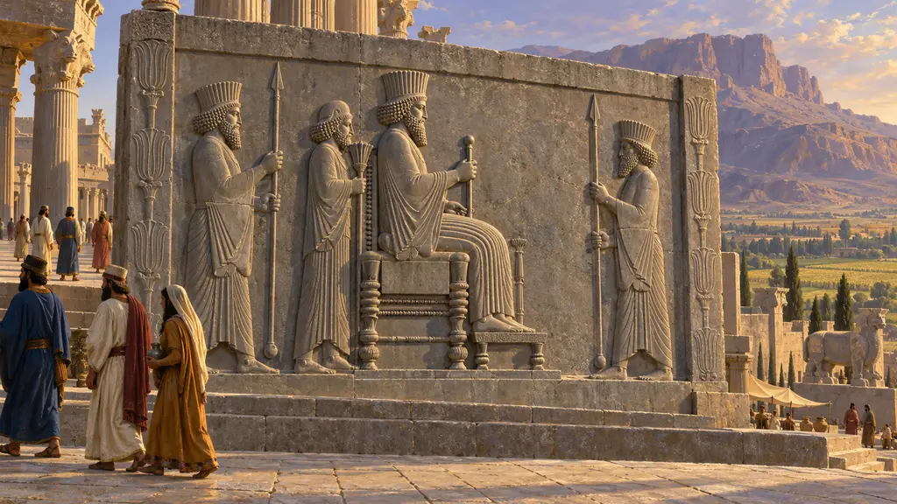
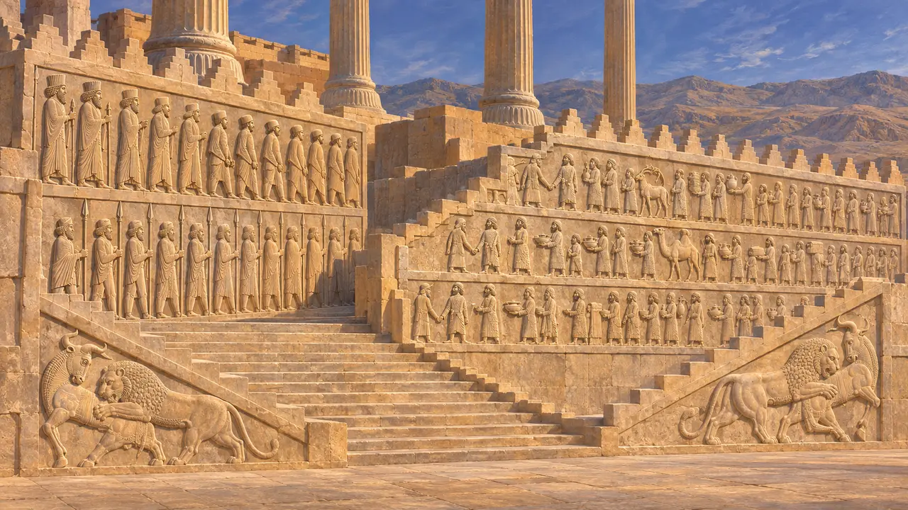
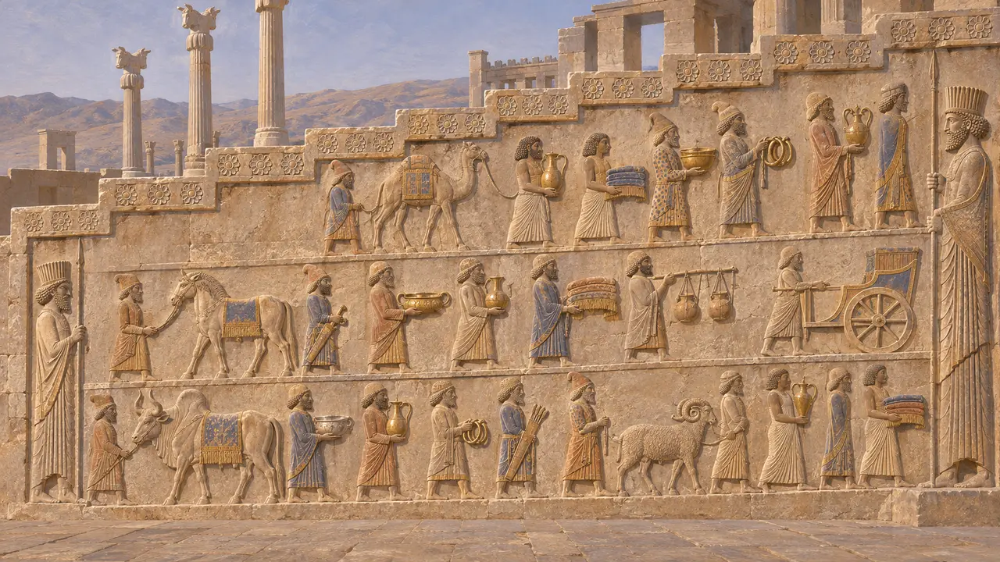
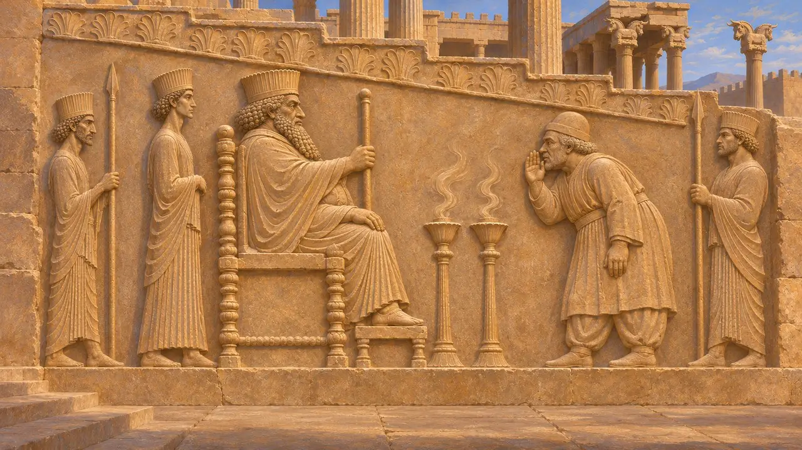
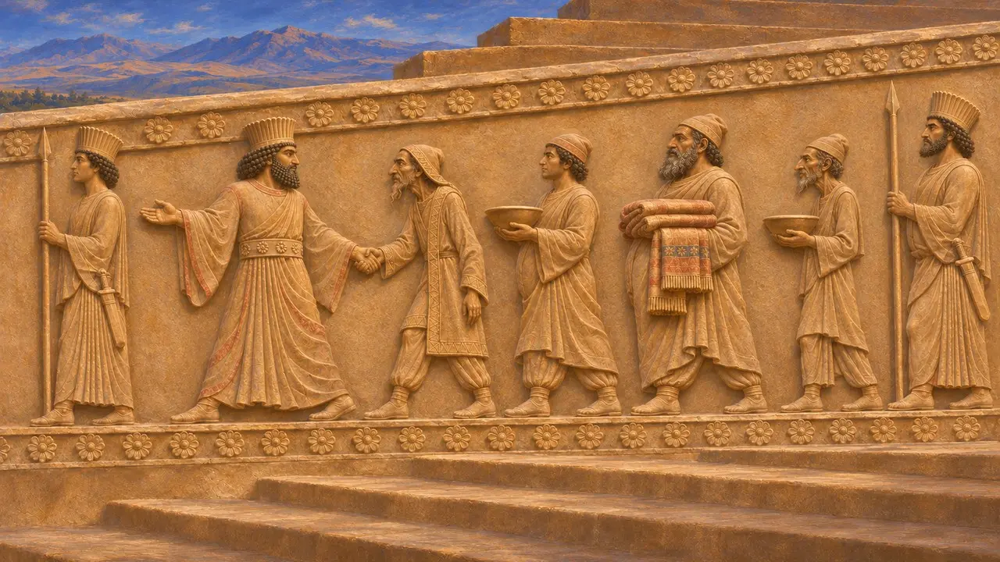
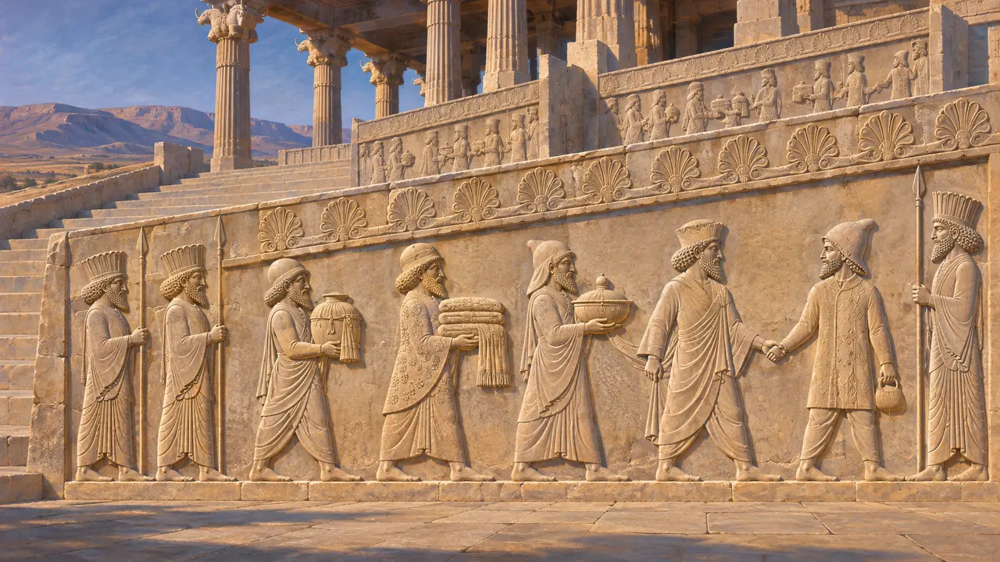

نقشبرجستهٔ شاهی
لوحهای سنگی تراشیدهٔ پلکان با نقش هدیهآوران و نگهبانان، تخت جمشید، حدود 515 تا 480 پ.م.
نقشبرجستههای بزرگ تخت جمشید پلکانهای آپادانا را میآراستند؛ تالار باری که داریوش ساختنش را آغاز کرد و در روزگار خشایارشا به پایان رسید. این نقشها بیستوسه هیئت از سرزمینهای شاه را نشان میدهند که پیشکش میآورند، همراه با صفهایی از بزرگان و نگهبانان پارسی و مادی. این نقشها روی هم شاهنشاهی را همچون گردهمایی سامانیافتهٔ مردمان گرداگرد تخت شاهی مینمایاندند.
در بازی: بازی نقشبرجستهٔ شاهی را در ردهٔ مسکن میآورد: لوحهایی از باجآوران همهٔ اقوام و نگهبانان شاه. نقشبرجستههای واقعی پلکان یک تالار شاهی را میآراستند و بیستوسه هیئت را نشان میدهند، نه همهٔ اقوام را.

پلکانهای آپادانا
در اسنادکاوشها در تخت جمشید برنامههای نقشبرجستهٔ همسانی را بر پلکانهای شمالی و شرقی آپادانا آشکار کرد؛ پلکان شرقی که دیرزمانی زیر آوار مدفون بود، بهتر از همه بر جای مانده است. بر یک بال، صفهایی از بزرگان با جامهٔ پارسی و مادی همراه با نگهبانان مسلح ردیف ایستادهاند. بر بال دیگر، بیستوسه هیئت نمایندگی به سوی مرکز بالا میروند و پیشاپیش هر یک پیشکاری است که دست سرکردهٔ هیئت را گرفته است. صحنههای حملهٔ شیر به گاو گوشههای سهگوش را پر کردهاند.
E. F. Schmidt, Persepolis I, 1953

پیشکشهایی از ایالتها
در اسنادهر هیئت جامهٔ ویژهٔ خود را بر تن دارد و کالاهای خود را میآورد: پوشاک، ظروف فلزی، جنگافزار، زیورآلات و جانورانی چون اسب، شتر، گاو کوهاندار و قوچ. برخی ارابه میآورند و گروهی کوزههای کوچکی را بر یوغی حمل میکنند که شاید گرد زر در آنها باشد. پژوهشگران بسیاری از این گروهها را با مقایسهٔ جامهشان با تختبَرانی که نامشان بر آرامگاههای شاهی نوشته شده بازمیشناسند، و ردهای رنگدانه نشان میدهد که این نقشها روزگاری رنگآمیزی شده بودند.
G. Walser, Die Völkerschaften auf den Reliefs von Persepolis, 1966

قطعهٔ مرکزی گمشده
در اسناددو نقشبرجستهٔ بزرگ یافتهشده در خزانه، شاهی نشسته را نشان میدهند که کارگزاری را به حضور میپذیرد که دست به سوی دهان برده است، و ولیعهد پشت تخت ایستاده است. پژوهشهای بعدی نشان داد که این نقشبرجستهها نخست در میانهٔ پلکان آپادانا قرار داشتند و احتمالاً در دوران اردشیر یکم، هنگامی که نقشبرجستههای میانی تازهای جایشان را گرفت، جابهجا شدند. این کارگزار را اغلب هزارپت میدانند و شاه را داریوش یا خشایارشا.
A. B. Tilia, Studies and Restorations at Persepolis and Other Sites of Fars, 1972

باج یا پیشکش
روایت باستانیهرودوت باج سالانهٔ ایالتها را به نقره و کالا برمیشمارد و میگوید برخی اقوام، چون عربها و حبشیان، به جای باج معین پیشکش میفرستادند. در نقشبرجستهها هرگز نام آنچه حمل میشود نیامده است. از این رو بسیاری از تاریخنگاران این پیکرهها را پیشکشآوران میخوانند نه باجآوران، چرا که این صحنه بر خدمت از سر رضا تأکید دارد نه بر پرداخت مالیات.
Herodotus 3.89-97

جشنی واقعی یا آرمانی
مورد مناقشهبرخی پژوهشگران این دستهٔ آیینی را گزارشی از آیینی سالانه دانستهاند که اغلب با جشن نوروزی در تخت جمشید پیوند داده میشود. دیگران، بهویژه م. ک. روت، برآناند که هیچ گواهی بر چنین جشنی در دست نیست و نقشبرجستهها تصویری بیزمان از هماهنگی شاهنشاهی را نشان میدهند. این پرسش همچنان گشوده است، زیرا هیچ نبشتهای از این محوطه آن رویداد را وصف نمیکند.
M. C. Root, The King and Kingship in Achaemenid Art, 1979
منابع
- E. F. Schmidt, Persepolis I, 1953
- M. C. Root, The King and Kingship in Achaemenid Art, 1979
- G. Walser, Die Völkerschaften auf den Reliefs von Persepolis, 1966
- A. B. Tilia, Studies and Restorations at Persepolis and Other Sites of Fars, 1972
- Herodotus 3.89-97
- P. Briant, From Cyrus to Alexander, 2002